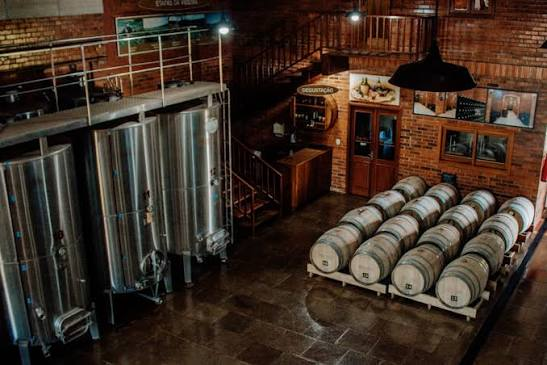

A Vinheria Agnello iniciou as suas atividades em São Paulo há mais de 15 anos como uma empresa familiar dirigida pelo Sr. Giulio e pela sua filha Bianca. Com apenas uma loja física, consolidou-se como referência no mercado de vinhos finos nacionais e internacionais.

O grande pilar do sucesso da Vinheria Agnello é o atendimento altamente especializado e consultivo. A equipa conta com 6 colaboradores, dos quais 3 são vendedores e profundos conhecedores do universo dos vinhos, prontos para orientar cada cliente quanto às características dos rótulos, regiões produtoras, tipos de uva e harmonizações perfeitas.